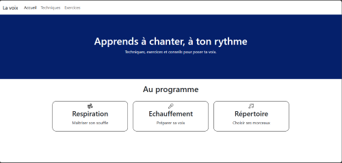
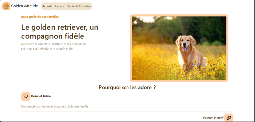

Alizé Rodrigues
Etudiante en 1ère année de BTS SIO option SLAM, à la recherche d'une alternance dans le dévelopepement.
Ce qui m'intéresse dans le développement web, c'est de comprendre ce qu'il se passe
derrière un site : comment il est construit et comment il fonctionne. Cette curiosité me
pousse à apprendre en continu, notamment grâce à mes projets personnels. En
comparant mon premier site, sur le chant, à celui sur les goldens retriever, j'ai mesuré ma
progression : la mise en page du second est plus claire et plus accueillante. Je souhaite
poursuivre cet apprentissage au sein d'une équipe, en présentiel, pour pouvoir poser mes
questions et progresser plus vite.
En bref
1 une semaine école, 1 semaine entreprise
Disponible dès maintenant
Tours et Indre-et-Loire, présentiel
Formation
Un programme en deux temps : les fondations, puis la montée en niveau.
Semestre 1
Les fondations
Bases du web
Construire des pages avec HTML et CSS
PHP
Ecrire la logique d'un site
SQL
Stocker et intérroger des données
Applications web en PHP
Relier pages et données
Sécurité
Protéger un site et ses utilisateurs
Semestre 2
Montée en niveau
Programmation orientée objet
Organiser son code en blocs réutilisables
Architecture MVC
Séparer données, logique et affichage
Bases de données avancées
Gérer des données plus complexes
Symfony
Découvrir un framework utilisé en entreprise
Référencement technique
Rendre un site visible dans les moteurs de recherche
Projets
Deux projets personnels. Le second montre ce que j'ai appris en réalisant le premier.

La voix
Projet personnel, septembre 2026
Un site de 7 pages qui donne des conseils sur les techniques de chant : respiration, posture, justesse et protection de la voix. Il propose trois types d'exercices : le bourdonnement, les gammes et la note tenue.
HTML
CSS
Bootstrap
Ce que j'ai appris
En relisant le code de ce projet, j’ai remarqué que j’avais utilisé la grille Bootstrap sans préfixe de taille d’écran : sur téléphone, les cadres se placent mal et les liens du menu ne sont plus visibles. J'ajouterai donc ces préfixes et laisserai les liens du menu affichés, pour que le site reste utilisable sur un petit écran.

Golden Attitude
Projet personnel, septembre 2026
Un site d'information de 3 pages sur le golden retriever : accueil, la race (histoire, fiche d'identité, caractère), et santé & entretien (alimentation, toilettage, points de vigilance).
HTML
CSS
Bootstrap
Ce que j'ai appris
La palette de couleurs et les images rendent ce site plus accueillant que le précédent. Côté code, j’y ai retrouvé le même défaut, l’absence de préfixes de taille d’écran. Le revoir dans un second projet m’a montré que c’était une notion qui me manquait, pas un simple oubli.
Expériences
Deux stage chez KERNL, une agence web à Tours.
Stage de troisième
1 semaine
KERNL, agence web à Tours
Découverte du HTML et du CSS en autonomie avec OpenClassrooms.
HTML
CSS
Stage de seconde
2 semaine
KERNL, agence web à Tours
Première entreprise que j'ai contacté pour mon stage. Dans cette agence de 7 développeurs, j'ai testé la page d'un de leurs projets et repéré des liens et boutons qui ne mennaient à aucune page. En parallèle, j'ai découvert le JavaScript en autonomie avec OpenClassrooms. Encadrée par le dirigeant de l'agence, j'ai beaucoup apprécié le travail d'équipe et cette ambiance familiale.
Test de pages
JavaScript
Contact
Disponible dès maintenant pour une alternance en dévelopepement web, à Tours et en Indre-et-Loire.